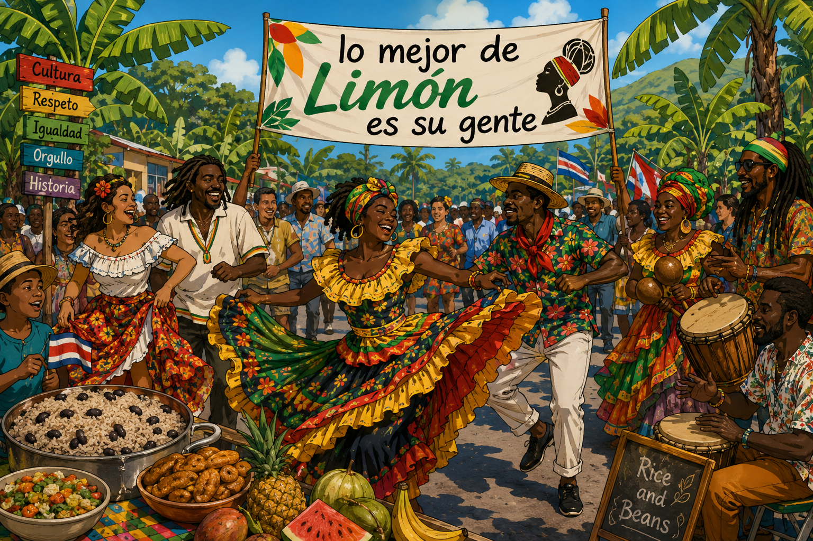
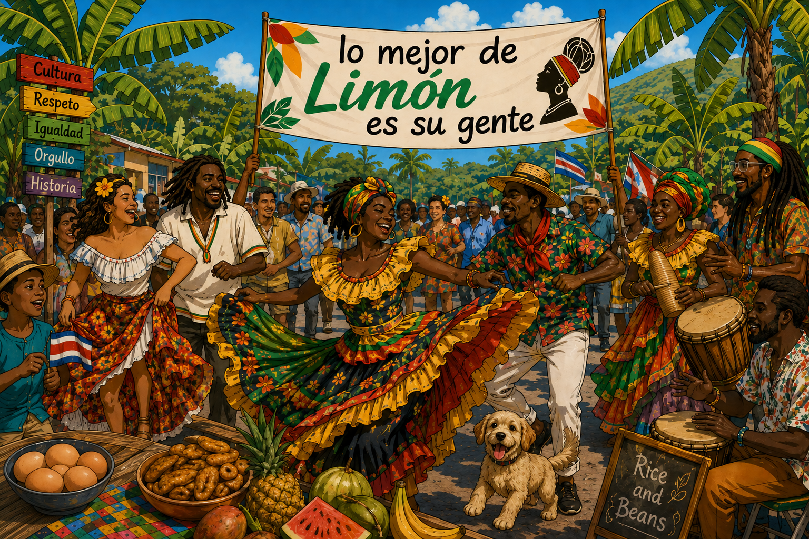

God Deh Pon Wi Side
El aroma a tomillo, leche de coco y chile panameño flotaba con fuerza en el aire fresco de la tarde, mientras el ritmo retumbante del tambor marcaba el pulso de la fiesta comunitaria. Frente al toldo adornado donde destacaba la gran pancarta de "Lo mejor de Limón es su gente", Shanice apretaba contra su pecho el oficio oficial de nombramiento.
Marcus, envuelto en su camisa de patrones tropicales, la tomó de la mano y la hizo girar en medio de la calle abarrotada de vecinos. Sus sonrisas chocaban con el brillo del sol caribeño.
—We did it, gal! —exclamó Marcus, levantando la voz por encima del repique de las maracas—. Te lo dije, God deh pon wi side (Dios está con nosotros). No había forma de que no te dieran esa plaza de maestra aquí mismo en el pueblo.
Shanice rio con ganas, dejando que el vuelo colorido de su vestidura tradicional acompañara el movimiento de sus pasos de calipso. Volteó a ver la vieja escuela al otro lado del camino, el mismo lugar donde de niña aprendió a leer bajo la sombra de los árboles de pan.
—Mahn, todavía no lo puedo creer, Marcus —respondió ella con la voz cargada de emoción—. Pasar de sentarme en esos pupitres a estar al frente del aula... Cho! Es una bendición enorme. Quiero que estos carajillos sientan el orgullo de nuestra cultura, que sepan quiénes son y de dónde vienen.
—True, true, vas a ser la mejor teacher que hayan tenido —dijo él, abrazándola por la cintura antes de guiarla hacia la mesa principal, repleta de platillos tradicionales—. Pero ahora, tek it easy y celebremos. Hay que ir por ese plato de rice and beans con pollo en salsa que te está esperando allá al frente.
Shanice miró a su alrededor: la música resonando, los vecinos bailando bajo los carteles de Cultura, Respeto e Historia, y a Marcus a su lado. La alegría le desbordaba el pecho. Había vuelto a su hogar, no solo para quedarse, sino para sembrar futuro en la tierra que la vio crecer.
Encuentra las 7 diferencias
Encuentra las diferencias en la segunda imagen. Puedes hacer clic aproximadamente sobre ellas.
Imagen original

Encuentra las diferencias
